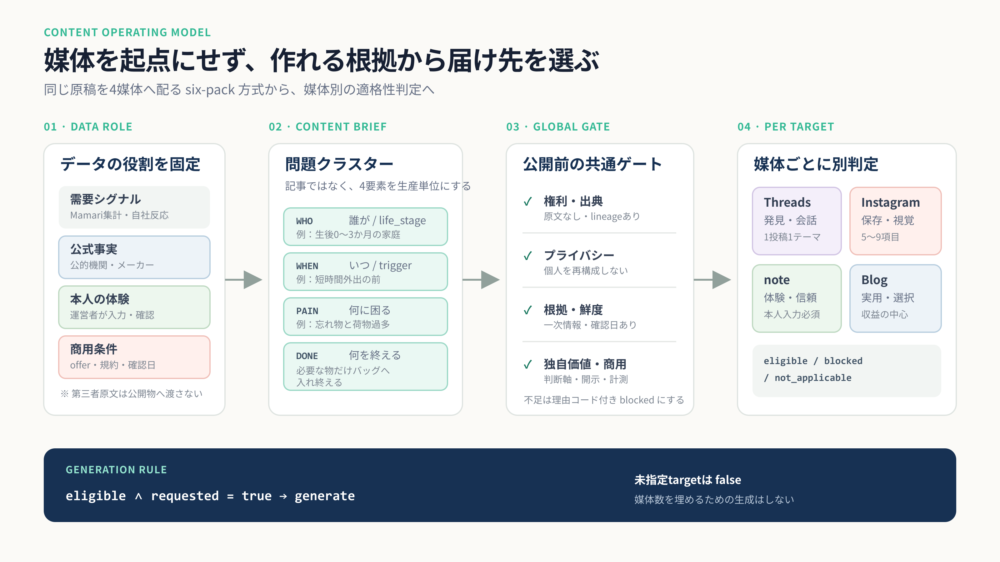
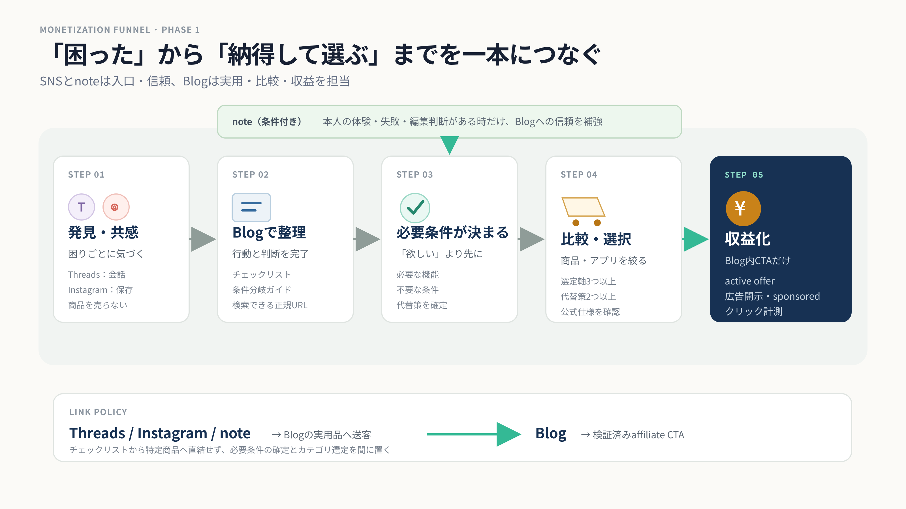
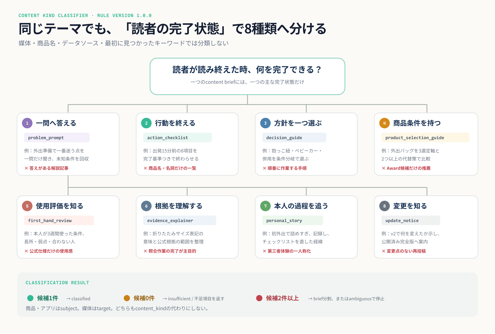
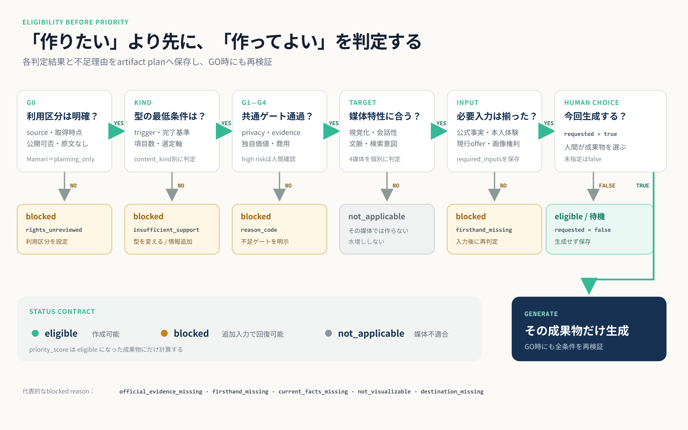
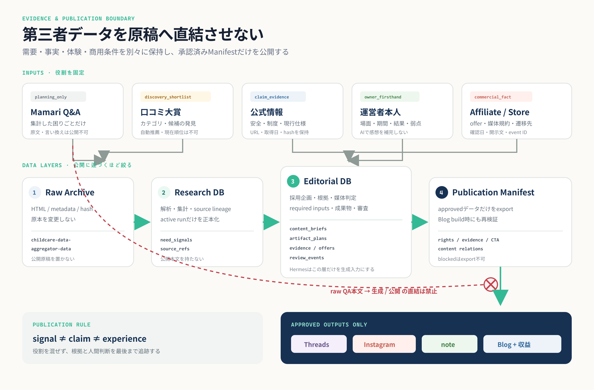

媒体を先に決めない。
作れる根拠から、届け先を選ぶ。
Threads・Instagram・note・ブログを、同じ原稿の転載先ではなく、 それぞれ別の仕事をする4つの出口として再定義します。 最終ゴールは、育児の困りごとを解決する商品・アプリ選びを支え、ブログで収益化することです。

収益導線
「困った」に気づく入口から、必要条件を整理し、納得できる選択へつなげる。

4媒体のコンテンツ契約
同じテーマでも、役割・適格条件・CTAを媒体ごとに変える。
Threads
- 作る
- 困りごとを一つに絞った問い、承認済み手順の1〜3点、公開・改訂通知。
- 条件
- 個人情報なしで答えられる。一般化しない。リンク先が公開済み。
- CTA
- 会話を優先。必要な投稿だけブログ完全版へ。
- 作る
- 5〜9項目の保存版、3軸以上の比較、条件分岐、タイムライン。
- 条件
- 短縮しても誤解しにくい。1枚1メッセージ。画像利用権を確認済み。
- CTA
- 最後のスライドからプロフィール・ブログ完全版へ。
note
- 作る
- なぜ作ったか、試して分かったこと、失敗、採否の判断、改善記録。
- 条件
- 本人の体験5要素、または固有の編集判断を人間が入力・確認済み。
- CTA
- 末尾で関連ブログへ1回。フェーズ1は直接アフィリエイトなし。
Blog
- 作る
- 完了判定できるチェックリスト、判断ガイド、選定ガイド、本人レビュー。
- 条件
- 公式根拠・現行情報・対象外条件を保持。承認済みManifestだけ公開。
- CTA
- active offer、開示、rel=sponsored、クリックevent IDが揃った時だけ。
content_kindを具体的に分類する
媒体や素材の単語ではなく、「読者が読み終えた時の完了状態」を正本にする。

8種類を分ける必須条件
| content_kind | 読者の完了状態 | 最低条件 | 短時間外出の例 |
|---|---|---|---|
| problem_prompt | 未知条件を一つ回答する | 一問・一条件軸・安全に回答可能・利用目的あり | 外出準備で一番迷う点を一問だけ聞く |
| action_checklist | 一連の行動を完了する | trigger・完了状態・action 3〜12・全項目の完了基準 | 出発15分前の8項目でバッグ準備を終える |
| decision_guide | 条件から方針を一つ選ぶ | 一つの問い・2経路以上・各経路の条件と終点 | 抱っこ紐・ベビーカー・併用を条件で選ぶ |
| product_selection_guide | 必要な商品条件を持つ | 選定軸3以上・代替策2以上・公式仕様・確認日 | 短時間外出用バッグを3軸で比較する |
| first_hand_review | 本人の使用評価を理解する | 本人使用・期間・場面・長所・弱点・合わない条件 | 本人が3週間使ったバッグを条件付きで評価する |
| evidence_explainer | 根拠の意味と範囲を理解する | 一つの問い・公式根拠・claim対応・適用範囲・確認日 | 折りたたみサイズ表記の読み方を整理する |
| personal_story | 本人の過程と学びを追う | 本人入力・出来事3つ以上・試行・結果・学び・期間 | 初外出で詰めすぎ、リストを直した経緯を書く |
| update_notice | 変更を知り完全版へ移動する | 変更event・before/after・対象者・公開済みURL | 外出チェックリストv2の変更点を知らせる |
境界で迷いやすい4組の分け方
- checklist / decision guide：行動を全部終えるなら前者、条件から方針を一つ選ぶなら後者。両方ある場合はbriefを分割。
- selection guide / review：公式仕様と選定軸なら前者、本人が使った対象の評価なら後者。商品がsubjectというだけでは分類しない。
- explainer / checklist：意味と適用範囲の理解なら前者、照合・設定・準備の完了なら後者。
- personal story / review：出来事・試行錯誤・学びが主役なら前者、特定商品・アプリの使用評価が主役なら後者。
分類器が止めるべき入力例
- Mamari回答の箇条書き → checklistにせず
insufficient(raw_source_only)。 - 口コミ大賞の商品一覧 → selection guideにせず、shortlistのまま。
- 「おむつ・ミルク・着替え」 → actionと完了基準がないため未分類。
- メーカー仕様だけ → reviewにせず、explainer候補または内部evidence。
- 移動方法の選択と荷造り完了が同居 → 先勝ちにせずbriefを二つへ分割。
- 候補0件は
insufficient、候補2件以上はambiguous。どちらも生成を停止。
現行データから、どのkind候補を提案できるか
- Mamari集計：
problem_promptは提案可能。他kindにはproblem・audience・scene候補だけを渡し、actionや推薦は作らない。 - Mamari QA本文：内部検証だけ。公開kindの本文・引用・言い換えには使わない。
- 口コミ大賞：商品subjectのshortlistだけ。selection guideの選定軸やreview評価にはしない。
- 公的・公式情報：
evidence_explainerを提案可能。他kindにはfactとして接続。 - 本人の使用記録：対象評価が主なら
first_hand_review、出来事と学びが主ならpersonal_story。 - approved成果物の変更event：
update_noticeを提案可能。 - affiliate offer：Blog CTAの準備状況だけ。content_kindや編集評価は決めない。
最低限実装する分類器テスト10件
- action 8件でもtriggerなし →
insufficient。 - triggerありでも名詞だけ → completion criterion不足。
- 条件と終点を持つ3経路 →
decision_guide。 - 商品subjectでも選定軸2件 →
insufficient。reviewへfallbackしない。 - 公式仕様あり・本人未使用 → review候補にしない。
- 本人使用あり・弱点なし →
insufficient。 - 行動完了と方針選択が同格 →
ambiguous / split_brief。 - Mamari回答の箇条書きだけ →
insufficient(raw_source_only)。 - 変更点あり・公開URLなし → destination不足。
- 候補1件でも人間未確認 → 生成不可。
分類後にだけ媒体を割り当てる
| content_kind | 仕事 | Threads | note | Blog | |
|---|---|---|---|---|---|
| problem_prompt | 未知条件を会話で集める | 主 | — | — | 内部企画 |
| action_checklist | 行動を完了させる | 1〜3点 | 5〜9項目 | 編集背景あり | 主 |
| decision_guide | 条件分岐で選択肢を絞る | 問い | 視覚化可能 | 編集判断あり | 主 |
| product_selection_guide | 商品・アプリの選定軸を示す | 抜粋 | 3軸以上 | 原則 — | 主・収益 |
| first_hand_review | 本人が使った条件と結果を示す | 抜粋 | 視覚素材あり | 主 | 主・収益 |
| evidence_explainer | 公式情報を整理して説明する | 注意点 | 安全に短縮可能 | 人間の論考あり | 主 |
| personal_story | 本人の試行錯誤と学びを残す | 抜粋 | 視覚素材あり | 主 | log任意 |
| update_notice | 公開・改訂・検証結果を知らせる | 主 | 原則 — | 任意 | — |
振り分けエンジン
優先順位の前に、作ってよいかを判定。足りない根拠は理由コードとして保存する。

必要条件が揃い、その媒体で安全・有用に表現できる。
公式根拠や本人入力などを追加すれば、将来eligibleになれる。
その内容は媒体特性に合わない。無理に成果物を作らない。
| content_kind候補 | 最低条件 | 不足時 |
|---|---|---|
| problem_prompt | 一つの困りごと＋答えやすい一問。閾値未満でも「よくある」と断定しない。 | insufficient_support |
| action_checklist | trigger、completion_outcome、独立action 3〜12、全項目の完了基準、例外条件。 | insufficient_support |
| decision_guide | 判断条件と分岐があり、読者が選択肢を減らせる。事実は一次情報へ接続。 | official_evidence_missing |
| product_selection_guide | 選定軸3以上、比較対象・代替策2以上、現行仕様を公式情報で確認。 | current_facts_missing |
| first_hand_review | 本人使用、場面・期間、良い点・弱点、合わない条件、現行仕様。 | firsthand_missing |
| personal_story | 本人の一次体験または編集過程。人間が本文の事実関係を確認。 | firsthand_missing |
全媒体より先に通す5つのグローバルゲート
- 権利：sourceと取得時点を追跡し、第三者原文を公開物へ含めない。
- プライバシー：投稿者を推定できる再構成をしない。自社回答も集計最小数を守る。
- 根拠：安全・仕様は一次情報へ接続。商品情報には確認日を持つ。
- 独自価値：条件分岐、実行機能、一次体験、比較軸、改善履歴のいずれかを持つ。
- 商用：active offer、媒体許可、開示、sponsored属性、event IDを確認する。
仮想判定例：生後0〜3か月の短時間外出
媒体数を埋めないtrigger＝近所へ初めて出かける前 ／ completion＝条件に合う持ち物をバッグへ入れ終える
データは「役割」を固定して使う
AIによる言い換えを権利処理とみなさず、需要・事実・体験・商用条件を混ぜない。

Mamari Q&A
集計した困りごと・場面候補として、企画発見だけに使う。
公開引用・言い換え・体験談化・推薦根拠化は禁止Mamari口コミ大賞
商品カテゴリと候補棚の発見に使う。現在の順位や提携可否は別途確認。
自動推薦・「現在No.1」・本人評価は禁止公的機関・メーカー公式
安全、制度、仕様、対応条件の一次根拠。確認日とURLを保持する。
公式コピーの大量転載や独立評価の代用は禁止運営者本人の入力
使用場面、期間、試したこと、結果、弱点、合わない条件を記録する。
入力のない感想・家族会話をAIで補わない現状監査で、この分離が必要と分かった理由
- QA本文62,697件に対し、年齢分類は77.9%不明、商品カテゴリは96.2%不明。
- 分類confidenceは全件0.72で、品質判定の差として機能していない。
- 現行six-pack候補15件はすべてdraftで、Content Studio適格候補は0件。
- Bundle import時に根拠・候補ID・版・媒体計画が失われ、1本のraw textへ縮退する。
- 監査中のsuggest呼び出しでdraft候補29件が保存されたため、previewとpersistを分離する必要がある。
RDBを4層に整理する
原本、分析、編集判断、公開物を混ぜず、公開に近づくほどデータを絞る。
HTML / metadata / hash。原本を変更しない。childcare-data-aggregator-data
第三者データの解析、集計、source lineage。公開本文を持たない。
採用企画、根拠参照、媒体適格性、required inputs、成果物、レビューを保持。
approvedな公開データだけをmy-blogへexport。ビルド時にも拒否条件を再検証。
HermesはResearch DBを直接読んで原稿化せず、Editorial DBで採用・検証されたbriefだけを生成します。
Editorial DBの最小10テーブル
- content_briefs がprimary reader outcome、classification status、候補kind、rule version、不足理由、人間確認を保持。
- artifact_plans が媒体判定の正本。target、eligibility、requested、blocked reasons、required inputsを保持。
- review_events は0件でも削除しない。権利・事実・体験・商用・公開の恒久ゲート。
- revisionは根拠件数ではなく、企画判断・本文・成果物が変わった時だけ増やす。
ディレクトリごとの責務
- childcare-data-aggregator-data：Raw Archive。公開原稿・AI下書き・媒体判定を置かない。
- datassette_gpt_plugin：Research DBの検索・解析・preview。明示persist以外は書き込まない。
- Hermes：Editorial DB、適格性判定、生成、審査。blockedはGO時にも止める。
- my-blog：approved Manifestの検証・公開・CTA・計測。raw QAへ接続しない。
実装順
テーブル削除やAI生成の改善より先に、契約と公開ゲートを固定する。
DBバックアップ、suggestのpreview/persist分離、監査生成候補の凍結、公開版とローカル版のIA統一。
8つのkind rule、classified / ambiguous / insufficient、10件のfixture、Editorial DB、Manifest validatorを実装。
source能力を判定し、8ルールを全件評価。候補0件・複数件を止め、classified後だけ媒体eligibilityを保存。
lossy text adapterを廃止。未指定target=false、blockedをGO時再検証、選定ガイドとレビューを分離。
Manifest build gate、コンテンツ関係、広告開示、sponsored属性、クリック計測、構造化データを追加。
低リスクの一テーマで、適格な成果物だけを生成・公開・計測してから拡張。
最初のパイロット：生後0〜3か月の短時間外出
商品との関係が自然で、チェック完了も定義しやすいテーマ。 noteと本人レビューは、実体験が入力された場合だけ追加します。
この状態になれば完了
「自然な記事が出た」ではなく、危険な出力を構造的に止められることを受入条件にする。
最初に固定する10の決定
- Mamariはcommunity_need_signal専用。
- Mamari Awardはdiscovery_shortlist専用。
- 公式情報はclaim evidence専用。
- 本人経験は本人入力からのみ作る。
- six-packは必須セットではない。
- noteは本人経験・編集判断がある時だけ。
- 商品本人レビューと商品選定ガイドを分ける。
- affiliate linkはフェーズ1ではBlogだけ。
- Blogはapproved Manifestだけを受け取る。
- 人間レビューなしで公開しない。